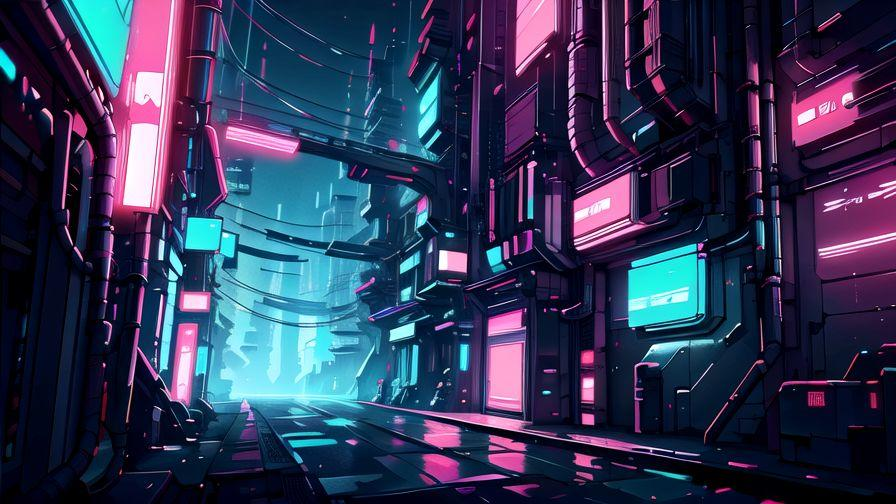
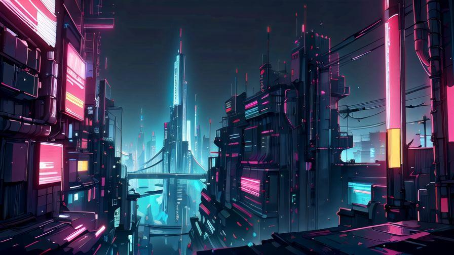
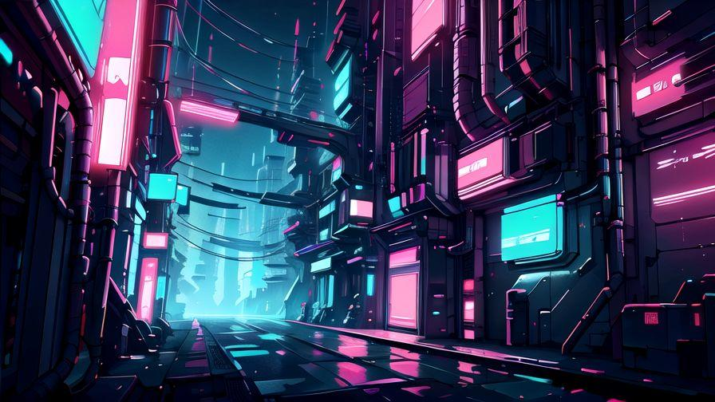
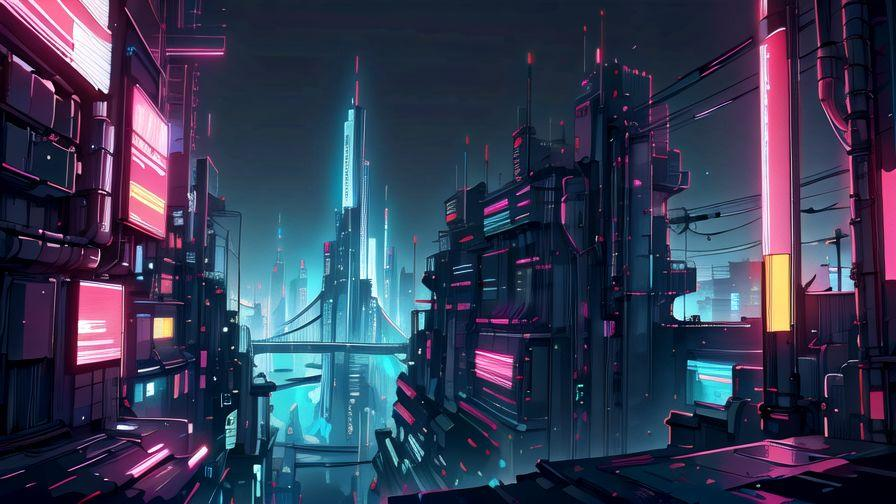

About MioCity
MioCity is a neon-drenched metropolis where the line between machine and human blurs. A haven for outcasts, rebels, and tech-savvy wanderers, this city never sleeps. Here, data flows faster than light, and power lies not in wealth, but in information.
In this cyberpunk world, factions fight for dominance, while underground networks orchestrate revolutions behind the scenes. You are not just a visitor — you are part of the code.
← Back to Menu